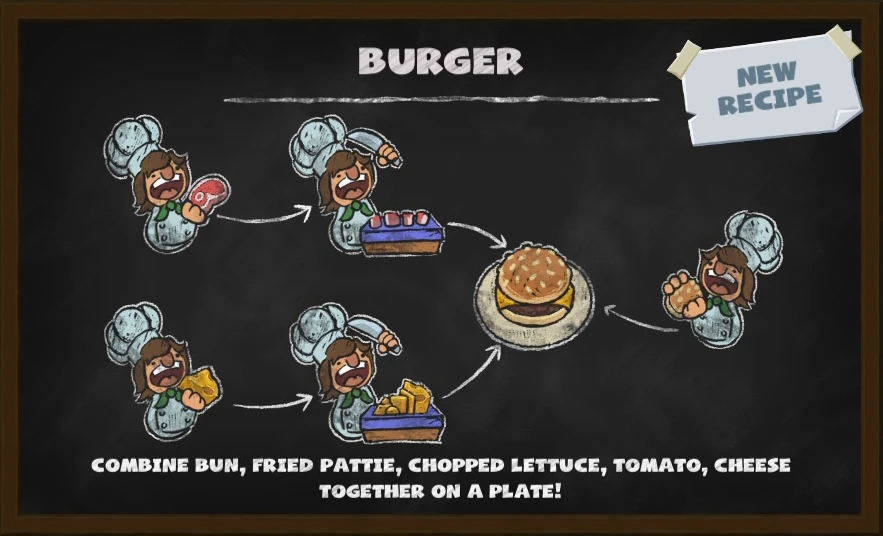

Hamburguer
INGREDIENTES
- Pão de hambúrguer – 1 unidade
- Carne moída – 150g
- Alface – 1 folha
- Tomate – 1 unidade
- Queijo – 1 fatia
- Sal – a gosto
- Pimenta – a gosto
INGREDIENTES

Usado como base para montar o hambúrguer.
Precisa ser frita na chapa antes da montagem.
Cortada antes de ser adicionada.
Também deve ser cortado.
Adicionado direto na montagem.